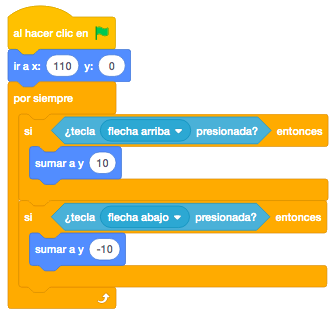
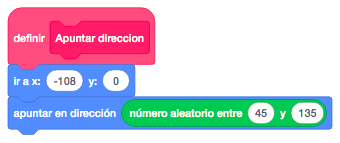
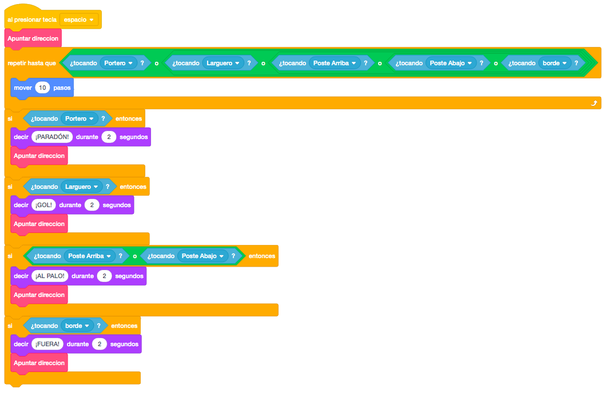
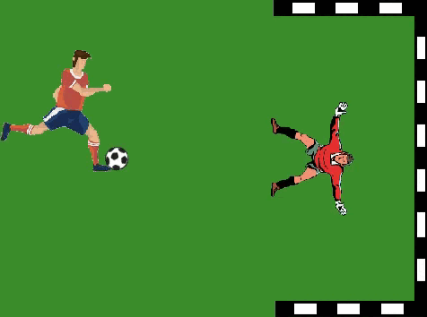

Para este juego vamos a necesitar un futbolista que tirará los penaltis, el portero que intentará pararlos, el larguero y el poste de la portería y el balón.
Haremos un escenario que sea totalmente verde, como el campo de fútbol.
Para descargar los objetos necesarios para el juego, lo haremos desde este link. Es un archivo comprimido con 5 objetos. Lo descargaremos y lo descomprimimos en el directorio del alumno.
El juego consiste en tirar penaltis e intentar meter gol en la portería. La pelota la lanzaremos con el
espacio.
Empezaremos en este caso por poner el fondo y todos los objetos en la pantalla. el jugador, el portero y la
portería (los dos postes y el larguero).
Lo que haremos con estos objetos será posicionarlos en la pantalla para que queden de la siguiente forma.

Al portero, le añadiremos que pueda moverse por la linea de la portería (de arriba a abajo) mediante los cursores arriba y abajo. En este caso, en lugar de mover pasos, utilizaremos el bloque "Sumar A Y" donde le sumaremos una cantidad positiva para moverlo hacia arriba y una cantidad negativa para moverlo hacia abajo.

Por último, programaremos la pelota, que será la que tenga toda la lógica del juego.
Posicionaremos la pelota y apuntaremos hacia la portería pero en un rango aleatorio entre la parte de arriba
y la parte de abajo, para que pueda, desde ir fuera hasta meter gol.
La pelota la lanzaremos cuando pulsemos la tecla espacio y se moverá hasta que toque al portero, a los
postes, al larguero o el borde del campo.

Dependiendo de donde de la pelota toque, mostraremos un mensaje distinto y volveremos a colocar la pelota y
apuntar hacia un nuevo lugar.
Debido a que los bloques de posicionar la pelota y apuntar los vamos a repetir varias veces, crearemos un
nuevo bloque con "Mis Bloques" que llamaremos "Apuntar" y que llamaremos cuando toque cada elemento y
también lo pondremos al principio para inicializar la partida.

Según el objeto que toque y durante 2 segundos:
- Si toca al portero diremos ¡PARADÓN!
- Si toca el larguero diremos ¡GOL!
- Si toca los postes diremos ¡AL PALO!
- Si toca el borde del campo diremos ¡FUERA!

Otro reto que se puede añadir al juego es que se le añada una animación al jugador para cambiar el disfraz
cuando lance la pelota.
También podemos hacer un movimiento automático del portero, hacia arriba y hacia abajo en lugar de tener
que moverlo nosotros.
Y el juego quedaría así.

Para ver el juego terminado pulsa
aquí.
Para descargarte el juego terminado pulsa
aquí.